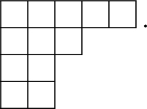
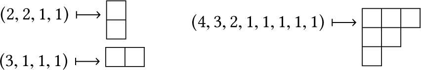

DOI: https://doi.org/10.1145/3178876.3186122
WWW '18: Proceedings of The Web Conference 2018, Lyon, France, April 2018
This paper demonstrates that the Preferential Attachment rule naturally emerges in the context of evolutionary network formation, as the unique Nash equilibrium of a simple social network game. In this game, each node aims at maximizing its degree in the future, representing its social capital in the “society” formed by the nodes and their connections. This result provides additional formal support to the commonly used Preferential Attachment model, initially designed to capture the “rich get richer” aphorism. In the process of establishing our result, we expose new connections between Preferential Attachment, random walks, and Young's Lattice.
CCS Concepts: • Theory of computation → Social networks; Network formation;
ACM Reference Format:
Chen Avin, Avi Cohen, Pierre Fraigniaud, Zvi Lotker, and David Peleg. 2018. Preferential Attachment as a Unique Equilibrium: Extended Abstract. In Proceedings of The Web Conference 2018 (WWW 2018). ACM, New York, NY, USA, 10 Pages. https://doi.org/10.1145/3178876.3186122
The Preferential Attachment [1] model is definitely one of the most commonly used models for real life networks in general, and social networks in particular. The model is based on the Preferential Attachment rule, which dictates that an existing node in the network with degree k will receive a new link with probability k/Z where Z is a normalization constant. This model generates synthetic graphs with characteristics intriguingly similar to those of many existing networks. These characteristics include small diameter [4], a power-law degree sequence [5, 24], and correlation between neighbor degrees [14]. Yet, the reason why Preferential Attachment fits so well with observations is still widely open. Indeed, while there have been many empirical observations [3, 21] that justify the use of Preferential Attachment in the social networks framework (including the “rich get richer” aphorism), there are little known formal analytical justifications for that usage, to our knowledge. In this paper, we make a significant step towards filling the gap between empirical explanations and formal justifications. We show that Preferential Attachment is the only rational choice for players involved in a simple natural network formation game.
The wealth-based recommendation game. We model the network evolution as a network formation game, called the wealth-based recommendation (
An alternative perspective of this model is the following. Each new node $v_t$ meets its host u randomly according to πt when it enters the network. Then it starts to preform a simple random walk [18] with stopping probability αt > 0. The new node connects to the node where the walk stops. For the sake of simplifying the presentation, we do not enforce recursion and only consider a one-step recommendation or a one-step random walk.
Note that the network state at time 3 is always a chain of 3 nodes, since node v 2 has only a single strategy and the strategy of v 3 does not change the outcome. Uncertainty only starts at time t ≥ 4. Figures 1 and 2 depict the possible scenarios of the network formation after 4 and 5 steps, respectively.
Note that, in Figure 2, the two graphs G 11 and G 22 are isomorphic. We have distinguished the two cases on the figure because the two graphs arise from two different histories: in G 11, the fifth node has connected to a leaf of the graph G 1 depicted in Figure 1, while in G 22, the fifth node has connected to a leaf of the graph G 2. Note that the connection of each node may be a direct connection to the contacted node (i.e., the host), or a delegated connection to a neighbor of the contacted nodes.
The utility of a node is defined as its expected degree, measuring its social capital. Note that the choice to whom to propose connection when a node $v_t$ joins has no impact on the social capital of $v_t$ in the short term, because every new node has degree 1 regardless of the chosen node with whom the connection is established. The main consideration of players is the long term affect of their choice, in light of the current state of the network (captured by its degree sequence), and future players’ strategies. Thus, the game captures some important psychological features of decision-making, where individuals must balance between the past, present, and future, and where the short and long term implications of a decision must be weighed. In particular, it is not known when the game will end, and nodes should plan their strategies to fit with long term scenarios. This is consistent with concepts like “best friends forever” (BFF) in social networks, and the terminology used in traditional wedding ceremonies: one does not know when the game will end, but one plans for the long term. In other words, unknown stoping time is the natural assumption, which is consistent with the fact that, sadly or luckily, one does not know when our life will end.
To sum up, our network formation game is characterized by the sequence $\bar{\alpha }=(\alpha _t)_{t\ge 1}$ measuring the evolution of the wealth of the society along with time, and the ending time τ where the utilities are measured. Both $\bar{\alpha }$ and τ are unknown to the players. They represent the natural uncertainty about the future, that decision making mechanisms have to cope with. The probability distribution πt over the degree sequences (d 1, …, d t − 1), d 1 ≥ d 2 ≥ … ≥ d t − 1, defines the strategy of the t-th node joining the network. A strategy profile Π is defined as the collection of all strategies of the players, i.e., Π = (πt ) t ≥ 1.
Our Results. We show that the Preferential Attachment strategy profile (defined formally later) is the unique Nash equilibrium of the game that is universal, i.e., it holds for all sequences $\bar{\alpha }=(\alpha _t)_{t\ge 1}$ and all stoping times τ. The uniqueness property is the striking point: the uncertainty about the future behaviors of the players makes Preferential Attachment the only viable choice for establishing connections when joining the network. Any other strategy profile Π might be a Nash equilibrium for some pairs $(\bar{\alpha },\tau)$ , but there must exist some pair $(\bar{\alpha }^{\prime },\tau ^{\prime })$ for which Π is not a Nash equilibrium. That is, in the game defined by the pair $(\bar{\alpha }^{\prime },\tau ^{\prime })$ , if there exists some player vt at time t, 4 < t ≤ τ, that decides to deviate from the Preferential Attachment strategy, then there exists at least one player $v_{t^{\prime }}$ at time t′ < t that gains (in expected degree) at time τ by deviating from the Preferential Attachment strategy.
It is worth discussing the impact of the amount of uncertainty about the future on the uniqueness of the Nash equilibrium. First, the unnatural assumption of a finite game, i.e., with ending time τ fixed a priori, and known to the players, would obviously result in many Nash equilibria, distinct from Preferential Attachment. In particular, the last player, $v_{\tau}$ , could use any strategy, as this would have no impact on its utility, necessarily equal to 1 at the end of the game. On the other hand, the assumption that the wealth varies with time is not crucial to the existence of a unique universal Nash equilibrium. Indeed, even if the wealth of the society is constant over time, i.e., $\alpha _t=\alpha _{t^{\prime }}$ for all t, t′ ≥ 1, Preferential Attachment would still be essentially the unique universal Nash equilibrium. More precisely, any universal Nash equilibrium under this assumption must satisfy that every player plays Preferential Attachment on all networks that are different from a star (i.e., an n-node tree with n − 1 leaves). Hence, assuming α varies over time is not central for demonstrating the relevance of Preferential Attachment. What is crucial is that the players do not know the value of α (even if it is fixed over time). Nevertheless, our proofs do not require using the whole range [0, 1] of values for α, and having α taken from a finite set of at least two distinct values is sufficient for establishing Preferential Attachment as the unique universal Nash equilibrium. Assuming at least two values for α seems, however, necessary. Indeed, we show that if α is fixed a priori, say α = 1, and is known to the players, then there are many universal Nash equilibria. In fact, we characterize a sub-class of such universal Nash equilibria for α = 1, as an intermediate result toward demonstrating our main result.
Related Work. The Preferential Attachment (PA) model is a stochastic process used to randomly generate power-law degree distribution (a.k.a., scale-free) networks. It was originally proposed by Price [22] to study citation networks, and was popularized in Barabasi and Albert [1], who explained the structure of the World Wide Web using the PA rule. A few other examples of networks well captured by the PA rule include collaboration networks, the internet, interbank payment networks, airline networks, and protein-protein interaction networks [20], among others. Hence, the PA model is a powerful tool for studying real-world networks in general, and social networks in particular, but it does not help fully explain the existence of the very property it aims at simulating, that is, the prevalence of social networks with a power law degree distribution.
Some authors approach the problem of formally justifying PA. In particular, D'souza et al. [7] showed the emergence of preferential attachment from underlying optimization mechanisms. Our objective is to approach the problem from a simpler, and perhaps more natural game theoretical perspective. The same approach was suggested for future research by Jackson [10]. Several network formation games have been defined. The one introduced by Fabrikant et al. [8] (see also [19]) reaches an equilibrium on either the clique or the star graph, both of which rarely occur in large social networks. The PageRank game (see [2, 6, 9, 13]) better fits the social network setting. In this game, the players represent web pages, and each player forms directed links to other players, with the goal of maximizing his PageRank. In particular, equilibria of the PageRank game that are insensitive to the “jumping probability” of PageRank, and therefore are universal (in a similar sense to that defined in the current paper) were presented in [9]. Nevertheless, the PageRank game assumes that the number of players is fixed, and connections between individuals may evolve with time. Instead, we consider the formation of a possibly infinitely growing society, in which connections between individuals involve a permanent commitment.
We complete this section by noticing that another family of random models that generates scale scale-free networks is based on the copying mechanism [11, 12, 15, 16, 25]. In these models the process by which a new node selects its connections is similar to ours, but these models (as well as the original PA) are not game-based.
In this section we fully specify of the game presented in the introduction, and then formally state our main results.
To formalize our game, we define the network evolution as a network formation game called the wealth-based recommendation (
We now clarify the process for choosing the host. Let πt denote the strategy of $v_t$ , which dictates the distribution by which $v_t$ chooses its host, for every instance of the graph T (t − 1). For a node $v_i$ in a graph G, we denote by $\deg _G(v_i)$ its degree (i.e., number of neighbors). The degree sequence $\textsf{DS}(G)$ of an n-node graph G is the non-increasing sequence (d 1, d 2, …, dn ) of its node degrees. Let $\mathcal {D}^{(t)}$ be the set of all degree sequences of trees with t nodes. For every t ≥ 1, the strategy πt is a function
For a sequence $ \bar{\alpha _{}}=(\alpha _t)_{t\ge 1}$ with αt ∈ [0, 1] for every t ≥ 1, and and a time τ > 1, let wbr $(\bar{\alpha _{}},\tau)$ denote the wealth-based recommendation (
For a given game wbr $(\bar{\alpha _{}},\tau)$ , let T (t)(Π) be the random tree obtained at time t when strategy profile Π is used. Note that T (t)(Π) is actually a node-labeled tree, where each node is labeled by its arrival time in the network. In the following, an n-node labeled tree is a tree with its node labeled by distinct integers in {1, …, n}. For every t-node labeled tree T, let
In the wbr game, the utility of $v_i$ at time t is defined as $ {\bf u}_{i}^{(t)}(\Pi) = \mathbb {E}[\deg _{T^{(t)}(\Pi)}(v_i)] = \sum _{T \in \mathcal {T}^{(t)}} \deg _T(v_i) \cdot \varphi (T)~,$ where $\mathcal {T}^{(t)}$ is the set of all t-node labeled trees.
A strategy profile Π is a Nash equilibrium for a game wbr $(\bar{\alpha _{}}, \tau)$ if no player $v_t$ can increase its utility by unilaterally changing its own strategy πt , and a strategy profile Π is a universal Nash equilibrium if it is a Nash equilibrium for wbr $(\bar{\alpha _{}},t)$ for every finite time τ and every sequence $\bar{\alpha _{}}$ . More formally, for a game wbr $(\bar{\alpha _{}}, \tau)$ , and t ∈ {1, …, τ}, let Π − t be the (τ − 1)-dimensional vector of strategies played by all players different from t, and let $ (\pi _{t} ^{\prime },\Pi _{-t})$ denote the strategy profile in which $v_t$ plays the strategy πt and all other players play according to the vector Π − t .
A strategy profile Π = (πt ) t ≥ 1 is a universal Nash equilibrium for the wbr game if, for every game wbr $(\bar{\alpha _{}},\tau)$ , and every strategy profile $\Pi ^{\prime }=(\pi ^{\prime }_t)_{t\ge 1}$ , we have $ {\bf u}_{t}^{(\tau)}(\pi _{t},\Pi _{-t}) \ge {\bf u}_{t}^{(\tau)}(\pi _{t}^{\prime },\Pi _{-t})$ for every player t = 1, …, τ.
Let us denote by pa the preferential attachment strategy, that is, pa is the individual node strategy by which, given a degree sequence D = (d 1, …, dn ), a node of degree k ∈ D is contacted with probability
The preferential attachment profile, denoted $\Pi _{\textrm{PA}}$ , is the strategy profile where players $v_t$ play arbitrarily for t ≤ 4, and players $ v_t$ play according to pa for t ≥ 5.
Note that, for every strategy profile, the second player has no choice, and the choice of the third player is irrelevant (as any choice yields the same network). The assumption that the fourth player plays arbitrarily in $\Pi _{\textrm{PA}}$ is a minor artifact due to technical reasons which are popping up in the proofs. The following result shows that pa is a natural strategy to play.
The preferential attachment profile $\Pi _{\textrm{PA}}$ is a universal Nash equilibrium for the
The following theorem is the main result in this paper. It shows that, in fact, for rational players, there is no alternative to play pa.
For any strategy profile $\Pi \ne \Pi _{\textrm{PA}}$ , Π is not a universal Nash equilibrium for the
The time-invariant
If a strategy profile Π is a universal Nash equilibrium for the time-invariant
The static
Let Π be a universal Nash equilibrium for the static
It is important to note that pa is not the only degree consistent strategy. Actually, Lemma 4.15 describes an interesting family of degree consistent strategies, which consists of pa as well as the uniform distribution (i.e., connecting each host with probability 1/(t − 1)), among other distributions.
The rest of the paper is dedicated to proving these theorems. Due to lack of space, some proofs are deferred to the full version.
We now show that the preferential attachment (PA) profile is universal. We do this by showing an intimate connection between the wbr $(\bar{\alpha _{}}, \tau)$ game and the simple random walk on a graphs. First recall a well known result about the stationary distribution of the simple random walk with self-loops (e.g., see Levin et al. [17]§1.5). For any undirected graph G = (V, E) with n nodes and m edges the stationary distribution of the simple random walk with self-loop probability α, for any 0 < α < 1, is $\pi (v) = \frac{\deg _G(v)}{2m}$ . The interesting observation here is that the stationary distribution for the actual tree T at time t is the same as the pa strategy for T, namely, for every node v ∈ T, $\pi (v) = \textrm{PA}(\deg _T(v),\textsf{DS}(T))$ . We can now use this observation to show that for any wealth, the probability that a new arriving node connects to any given existing node is equal to the probability of choosing that node as a host if the node plays according to pa.
Suppose that the preferential attachment profile is being used in wbr $(\bar{\alpha _{}}, \tau)$ , and let us consider a node u joining the network T at time t ≥ 4. For every sequence $ \bar{\alpha _{}}=(\alpha _t)_{t\ge 1}$ , we have
The proof follows from the fact that the process by which u decides to which node it connects in our wbr $(\bar{\alpha _{}}, \tau)$ game, is identical to a one step simple random walk with self-loop probability αt and starting the walk from the distribution πt . By definition, if πt is the stationary distribution of T then the probability to choose v as a host is equal to the probability to connect to v (after one step of the random walk). The proof concludes by recalling that pa is the stationary distribution for T.
We can now prove Theorem 2.5.
Suppose that the preferential attachment profile $\Pi _{\textrm{PA}}$ is being used, and assume towards contradiction that there exists a sequence $\bar{\alpha _{}}$ and some player $v_t$ for t ≥ 4 who could increase his utility by deviating from the strategy pa to a strategy $\pi _{t} ^{\prime } \ne \textrm{PA}$ . Let $d_t^{(s)}$ denote the random variable indicating the degree of player $v_t$ at time s. Then $d_t^{(t)}=1$ and, by Lemma 3.1, for every s > t the following recurrence holds:
We now turn to prove the main technical result of the paper, namely, that Preferential Attachment is the unique Nash Equilibrium. We first explain and prove the case of five players, and then extend the result to the general case using what we call game event operators and relying on an interesting connection to Young's Lattice [23].
We make use of the following three simple lemmas.
Every tree T of size n has some positive probability of occurring after n steps of the
A tree T of size n with degree sequence (d 1, …, dn ) exists if and only if $ \sum \limits _{i=1}^{n}{d_i} = 2(n-1)$ .
Let T be a tree with the degree sequence (d 1, ..., dn ), and let $ v_i$ be a node in T such that di > 1. Then a tree T′ may be constructed with the same degree sequence as T where $ v_i$ has a neighbor of degree 1.
Let Π = (πi ) i ≥ 1 be a strategy profile, where πi is the individual strategy of the i th player, denoted by $v_i$ . The strategies π 1, π 2, and π 3 are trivial since π 1 consists, by definition, in creating one node, while the second and third players invariably face degree distributions (0) and (1, 1), respectively. That is, π 2 is the unique strategy of contacting the unique degree-0 node, and π 3 is the strategy of contacting a degree-1 node (both with probability 1). After the third player has played, the graph consists of the 3-node path P 3, so player $v_4$ can be facing only one kind of degree sequence, namely 211 (we omit parenthesis and commas for clarity). Still, player $v_4$ has infinitely many strategies. More specifically, the strategy of $v_4$ can be described by just one parameter p ∈ [0, 1], namely, the probability with which it contacts a degree-1 node. After player $v_4$ has played, the resulting tree can be of two forms only, denoted hereafter by G 1 and G 2, where G 1 is the 4-node star S 4 and G 2 is the 4-node path P 4, with respective degree sequences $\textsf{DS}(G_1)=3111$ and $\textsf{DS}(G_2)=2211$ . These graphs are depicted in Figure 1.
It follows that the strategy π 5 may be described by just two parameters: the probabilities of connecting to a leaf in S 4 and in P 4. After player 5 has played, the resulting tree can be of three forms only, the 5-node star S 5, the 5-node path P 5, and the unique tree T 5 with degree sequence 32111 (see Figure 2). For the sake of the analysis, we distinguish two different states corresponding to T 5, depicted as G 11 and G 22 in Figure 2. Indeed, G 11 and G 12 in Figure 2 result from $v_5$ playing on G 1 in Figure 1, while G 21 and G 22 result from player $v_5$ playing on G 2.
The strategy π 6 is played on one of three graphs: S 5(= G 12), P 5(= G 21) and T 5(= G 11 = G 22), and may thus be described by four parameters: one parameter for each of the graphs S 5 and P 5, and two parameters for the tree T 5 (since it contains three distinct degrees). After player $v_6$ has played, the resulting tree can take several forms, which we consider in the full version of the paper.
In Section 4.5 we collapse the evolution of the game further to consider only degree distributions. This new structure discards knowledge of the topology of the graph, and the history of the game, but is easier to generalize and has several advantages, to be discussed later.
The strategies π 1, π 2, and π 3 are unique, as discussed earlier. The strategy of $v_4$ can be described by just one parameter p ∈ [0, 1], where π 4(1) = p and π 4(2) = 1 − 2p (note that $\textrm{PA}$ corresponds to $p=\frac{1}{4}$ ). According to our definition of the preferential attachment profile, player $v_4$ is free to use any of the strategies available to it. Theorem 2.6 claims that, in particular, $v_5$ , must play the $\textrm{PA}$ strategy in order to ensure a universal Nash equilibrium. This is shown by the next lemma.
Let Π = (πi ) i ≥ 1 be a strategy profile. If $\pi _{5}\ne \textrm{PA}$ , then Π is not a universal Nash equilibrium. Moreover, if $\pi _{5}\ne \textrm{PA}$ , then Π is not even a Nash equilibrium for all $\textrm{WBR}(\bar{\alpha _{}}, 5)$ game (i.e., even if the games stop after time 5).
To prove the lemma we show that if $\pi _{5}\ne \textrm{PA}$ , then for every π 4, there exists a wealth parameter α 5 such that π 4 is not the optimal strategy for $v_{4}$ . After $v_4$ has played, the resulting tree can be of two forms only, denoted earlier by G 1 and G 2, corresponding to the 4-node star S 4 and the 4-node path P 4 (depicted in Fig. 1), with respective degree sequences $\textsf{DS}(G_1)=3111$ and $\textsf{DS}(G_2)=2211$ . By the way S 4 and P 4 emerge from S 3 we have
Remark.It would be tempting to use Lemma 4.4 as the basis for an induction on the arrival time t in order to establish Theorem 2.6. However, this is not as simple as it may seem at a first glance. Indeed, it turns out that the fact that player $v_t$ does not play $\textrm{PA}$ may benefit not to player $v_{t-1}$ but to some other earlier player $v_{t^{\prime }}$ for t′ < t − 1. In particular, there is an example in which the fact that $v_6$ does not play $\textrm{PA}$ benefits to $v_4$ but not to $v_5$ . Establishing Theorem 2.6 requires more sophisticated tools, which are presented in the next two sub-sections.
The aim of this section and the next one is to concisely represent a full sequence of the game. Each player has a single turn in which it takes a simple action: choosing the degree of its host in the current graph. For any tree T of size n, let T⊕k be a random tree of size n + 1 uniformly distributed over all trees obtained from T by adding a leaf to some node of degree k in T. Let D = (d 1, d 2, …, dn ) be a degree sequence of size n. Let k be a degree in D, and let i be the minimal index such that di = k. We denote by D⊕k the degree sequence of size n + 1 obtained by increasing di to di + 1, and adding 1 at the end of the sequence D. That is,
The operations ⊕k and ⊖(k + 1) are inverse operations on degree sequences. Namely, let D and D′ be degree sequences of size n and n + 1, respectively. D′ = D⊕k⇔D = D′⊖(k + 1).
We say that $ D \in \mathcal {D}^{(n+1)}$ covers $ D^{\prime } \in \mathcal {D}^{(n)}$ , denoted by D≻D′, if D = D′⊕k for some degree k in D′. We say $ D \in \mathcal {D}^{(n)}$ dominates $ D^{\prime } \in \mathcal {D}^{(k)}$ , denoted by D > D′, if n > k and for every 1 ≤ i ≤ k, $ d_i \ge d_i^{\prime }$ . Let $ D_1,D_2 \in \mathcal {D}^{(n)}$ be degree sequences of the same size, and let S = {D′∣D′ < D 1, D 2}. We say D is the meet of D 1 and D 2, denoted by D = D 1∧D 2, if D ∈ S, and, for every D′ ≠ D in S, it holds that D′ < D. Similarly, let S′ = {D′∣D′ > D 1, D 2}. We say D is the join of D 1 and D 2, denoted by D = D 1∨D 2, if D ∈ S, and, for every D′ ≠ D in S′ it holds that D′ > D. Two degree sequences D 1 ≠ D 2 of size n are called a covering pair if there exists a degree sequence that is covered by both. Similarly, D 1 and D 2 are called a covered pair if there exists a degree sequence that covers both.
The game events defined in Section 4.4 describe a lattice structure of degree sequences as in Figure 3. Note that this lattice is a less detailed version of the evolution described in Section 4.2, disregarding the topology of the graph, as well as the history of the game. This collapsed version allows us to visualize the game evolution in terms of the operators ⊖ and ⊕. Moreover, if αi = 1 for all i > 0, then a path in the degree sequence lattice uniquely defines the evolution of the game, including the chosen hosts.
The lattice of degree sequences is equivalent to a poset called Young's lattice (see Figure 4). We will start with a few definitions (taken from Sagan [23]) necessary to explain this equivalence.
A partition of n, denoted λ⊢n, is a non-increasing sequence of non-negative integers λ = (λ 1, λ 2, …, λ ℓ) where $\sum _{i=1}^\ell \lambda _i = n$ .
Suppose λ = (λ 1, λ 2, …, λ ℓ)⊢n. The Young diagram of λ is an array of n boxes having ℓ left-justified rows with row i containing λi boxes for 1 ≤ i ≤ ℓ.
As an example, the Young diagram of λ = (5, 3, 2, 2) is 
Let (A, ≤) be a partially ordered set. Then a, b ∈ A have a greatest lower bound, or meet, if there is c ∈ A such that
The Young lattice is the poset of all integer partitions ordered by inclusion of their Young diagrams.
Consider a degree sequence $D = (d_1,d_2,\ldots ,d_n) \in \mathcal {D}^{(n)}$ . Let us map D to the Young diagram with d 1 − 1 boxes in the first row, d 2 − 1 boxes in the second row, etc. For example:
By Lemma 4.2, D is a partition of 2n − 2, and thus the sequence d 1 − 1, d 2 − 1, …, dn − 1 sums up to n − 2. Moreover, by the same lemma, every possible partition of n − 2 can be similarly mapped to a degree sequence of a tree of size n. Now let D′ be a degree sequence of size n + 1 such that D′≻D. The Young diagram that matches D′ covers the Young diagram that matches D. Therefore, the lattice of degree sequences illustrated in Figure 3 is equivalent to Young's lattice.
The equivalence between the two lattices implies the following lemma, since a corresponding lemma holds for Young's lattice (see Prop. 5.1.3 in [23]). Moreover, the following subsection was mostly inspired by analogous results on Young's lattice.
Let D 1 ≠ D 2 be degree sequences of size n. Then D 1 and D 2 are a covering pair if and only if they are a covered pair. Explicitly, there exists a degree sequence that is covered by both D 1 and D 2 if and only if there exists a degree sequence that covers both D 1 and D 2.
In this section, we assume that the wealth αt is 1 at all steps of the game (i.e., the game is static: each node connects to the host it contacts). The result obtained in this section will provide us with the tools we need for the proof of Theorem 2.6. Moreover, characterizing the Nash equilibria of this simpler variant of the game is interesting in itself, and establish Theorem 2.8.
For a given strategy profile Π, a degree sequence D is called reachable if there exists a sequence of player actions with nonzero probability of occurring such that
There may be Nash equilibrium for the static
Our next goal is to establish a sufficient condition for a strategy profile that is a Nash equilibrium for the static
Let Π be a Nash equilibrium for the static
In order to prove Lemma 4.10 we will need several helping lemmas. Let Γn be a graph with the set of vertices $ V(\Gamma _n) = \mathcal {D}^{(n)}$ , the set of degree sequences of size n trees, and the set of edges
The graph Γn is connected for all n.
By induction on n. For n = 4, V(Γ 4) = {(2211), (3111)}, and both degree sequences cover (211), so there is an edge between them. Suppose the statement holds for n = k, and consider n = k + 1.
Let $\lambda , \mu \in \mathcal {D}^{(k+1)}$ . Let $\lambda ^{\prime } \in \mathcal {D}^{(k)}$ be a degree sequence such that λ′≺λ, and let $\mu ^{\prime } \in \mathcal {D}^{(k)}$ be a degree sequence such that μ′≺μ. By the induction hypothesis there exists a path between λ′ and μ′ in Γk . Let that path be $\lambda ^{\prime } = \lambda _0^{\prime }, \lambda _1^{\prime }, \ldots , \lambda _{\ell }^{\prime } = \mu ^{\prime }$ .
For every i = 0, …, ℓ − 1, the degree sequences $\lambda _i^{\prime }$ and $\lambda _{i+1}^{\prime }$ have an edge between them in Γk , hence they are a covering pair. Therefore, by Lemma 4.9 they are also a covered pair, so they are covered by a degree sequence in $\mathcal {D}^{(k+1)}$ , which we call λi , for i = 0, …, ℓ − 1.
Now for every i = 0, …, ℓ − 1, the elements λi and λ i + 1 both cover the element $\lambda _{i+1}^{\prime }$ , hence they are a covering pair, and thus have an edge between them. Moreover, λ and λ 0 both cover λ′ (and possibly λ = λ 0), and λ l − 1 and μ both cover μ′. Therefore there exists a path between λ and μ in Γn .
Let Π be a Nash equilibrium for the static
Consider a covering pair $D_1, D_2 \in \mathcal {D}^{(t-1)}$ . They both cover some degree sequence $D^{\prime } \in \mathcal {D}^{(t-2)}$ . By definition, there exist some k 1 ∈ D 1 and k 2 ∈ D 2 such that D 1⊖k 1 = D 2⊖k 2 = D′. The player $v_{t-1}$ may deterministically choose between creating D 1 and D 2 when it sees the degree sequence D′. Hence, if πt (1, D 1) > πt (1, D 2) then the player $ v_{t-1}$ would gain by deviating from $ \textrm{PA}$ to take the action D′⊕(k 1 − 1) with probability one, contradicting the assumption that Π is a Nash equilibrium for the static
Now let us consider any two degree sequences $ \lambda , \mu \in \mathcal {D}^{(t-1)}$ , which are not necessarily neighbors in Γ t − 1. The graph Γ t − 1 is connected by Lemma 4.11, so there exists a path in Γ t − 1 from λ to μ. Let the path be λ = λ 0, λ 1, …, λ ℓ = μ. By Equation (2), πt (1, λi ) = πt (1, λ i + 1) for every i = 0, …, ℓ − 1. Therefore, πt (1, λ) = πt (1, μ) for every two degree sequences λ and μ in $ \mathcal {D}^{(t-1)}$ . In other words, πt is a degree-1 consistent strategy.
Let Π be a strategy profile in which $\pi _{i}=\textrm{PA}$ for all i ∈ {1, …, t − 1} and πt is a degree-d consistent strategy, for d = 1, …, k. Then none of the players $v_{t-1},v_{t-2},\ldots , v_{t-k}$ can change their utility by unilaterally deviating from Π.
Remark. Conversely, provided the assumptions of the lemma above hold, and provided that πt is not degree-(k + 1) consistent, then the player $v_{t-k-1}$ can profit by deviating from the $\textrm{PA}$ strategy as we show in the next lemma.
Let Π be a Nash equilibrium for the static
We prove the lemma by induction on k. The statement is true for k = 1 by Lemma 4.12, so assume it holds for k ≤ ℓ, and consider k = ℓ + 1. By the induction hypothesis, the strategy πt is degree 1, …, ℓ consistent. Thus, by Lemma 4.13, the players $v_{t-1},v_{t-2},\ldots , v_{t-\ell }$ have no reason to deviate from $\textrm{PA}$ . Let I = t − ℓ − 1, and define the event
It is left for player $v_I$ to consider only the cases in which its degree is ℓ + 1 in the graph T (t − 1). That is, for every degree sequence $D \in \mathcal {D}^{(I-1)}$ that may occur at the beginning of player $v_I$ ’s turn, and for every degree k ∈ D that $ v_I$ selects in its turn, $v_I$ should consider the possibility that all subsequent players connect to it. This scenario would generate the following degree sequence:
Now for any two distinct degrees k 1, k 2 ∈ D that I considers to select in its turn, I should consider the following degree sequences in $\mathcal {D}^{(t-1)}$ :
Accordingly, Eq. (3) translates to:
By Lemma 4.11, the graph ΓI is connected. Therefore, as in the proof of Lemma 4.12, Eq. (4) must hold for every two degree sequences D 1 and D 2 in the graph ΓI . In other words, πt is a degree-(ℓ + 1) consistent strategy over all degree sequences in the range of the function f. So if we show that f is onto $ \lbrace D \in \mathcal {D}^{(t-1)} \mid (\ell +1)\in D \rbrace$ , we are done. Thus, let $ D \in \mathcal {D}^{(t-1)}$ be a degree sequence that contains a node of degree ℓ + 1. We define the function $ g: \lbrace D \in \mathcal {D}^{(t-1)}\mid (\ell +1)\in D \rbrace \rightarrow \mathcal {D}^{(I)}$ as follows:
We observe that the function g is well defined. For every degree sequence D in $\lbrace D \in \mathcal {D}^{(t-1)}\mid (\ell +1)\in D \rbrace$ : the degree sequence D⊖(ℓ + 1) contains a node of degree ℓ, the degree sequence D⊖(ℓ + 1)⊖ℓ contains a node of degree ℓ − 1, the degree sequence D⊖(ℓ + 1)⊖ℓ⊖(ℓ − 1) contains a node of degree ℓ − 2, etc. By applying Lemma 4.5 repeatedly, we get that for every D in $\lbrace D \in \mathcal {D}^{(t-1)}\mid (\ell +1)\in D \rbrace$
By Lemma 4.14 the strategy πt is a degree-k consistent strategy, for every k ∈ {1, 2, …, t − 4}. Degrees larger than t − 2 are impossible because, at the beginning of step t, the graph contains exactly t − 2 edges, so it is left to consider the degrees t − 2 and t − 3. The issue is that the only nodes that can be of degree t − 2 or t − 3 at time t − 1 are nodes 1, 2 and 3, which have no meaningful choice in the game and thus have no effect on Nash equilibria. However, every possible strategy $\pi _{t}^{\prime }$ at time t is degree-(t − 2) and degree-(t − 3) consistent. Because for $D \in \mathcal {D}^{(t-1)}$ , it holds that t − 2 ∈ D only if D is the degree sequence of the star graph, and t − 3 ∈ D only if D = (t − 3, 2, 1, …, 1). Since both of those degrees occur in only one degree sequence, there is no way for the strategy $\pi _{t}^{\prime }$ to select nodes of those degrees with probabilities that are inconsistent over different degree sequences.
To establish the first part of the statement of Theorem 2.8, notice that the proof for Lemma 4.10 applies in this case as well. The assumption that every player up to t plays $\textrm{PA}$ implied two properties of the strategy profile that were needed in the proof of the theorem. The first property is that πi is degree consistent for every i ∈ {1, …, t − 1}, and the second property is that every degree sequence in $ \bigcup _{i=1}^{t-1}\mathcal {D}^{(i)}$ is reachable. The first property applies here by definition. The second property applies since every possible action at steps 1, …, t − 1 has a positive probability of occurring.
We need one last preliminary result.
If πn is a degree consistent strategy, then πn (1), the probability of contacting a leaf, determines the value of πn (k) for all k > 1. Moreover, if $\pi _{n}(1)=\frac{1}{2(n-2)}$ then $\pi _{n}=\textrm{PA}$ .
Let πn (1) = x (note that necessarily x ≤ 1/(n − 2)). We may calculate the probability of contacting a node of degree 2 by considering the path graph P n − 1. Contact probabilities must sum up to 1 in each graph, so πn (2) = (1 − 2x)/(n − 3). For every k = 3, …, n − 2 we may calculate the probability of contacting a node of degree k by considering a graph with the degree sequence (k, 2 n − k − 2, 1 k ) to get:
The second part of the lemma follows by direct calculation of πn (k) for every k when $x=\frac{1}{2(n-2)}$ .
Let Π be a strategy profile. We show that if Π is not the preferential attachment profile, then Π is not a universal Nash equilibrium. Let n be the first player that does not play according to $\textrm{PA}$ . From Lemma 4.4 if n = 5 we are done so assume n > 5 and so player $v_{n-1}$ must play $\textrm{PA}$ .
Let the graph at player $v_{n-1}$ ’s turn be P n − 2, the path of length n − 2. Note that the graph P n − 2 is reachable by Lemma 4.1. Let $\pi _{n-1}^{\prime }$ be the strategy in which $v_{n-1}$ selects a node of degree 1 with probability one, and let $\pi _{n-1}^{\prime \prime }$ be the strategy in which $v_{n-1}$ selects a node of degree 2 with probability one. Let us denote by T n − 1 the graph of n − 1 nodes with degree sequence (3, 2, …, 2, 1, 1, 1), which results from $v_{n-1}$ connecting to a node of degree 2 in P n − 2. Let α n − 1 = 1, then the strategies $\pi _{n-1}^{\prime }$ and $\pi _{n-1}^{\prime \prime }$ result in the graphs P n − 1 and T n − 1, respectively.
Since we assumed player $v_{n-1}$ plays a mixed strategy and Π is a Nash equilibrium for every α n − 1, it follows that
By Lemma 4.10, πn is a degree consistent strategy, so we may rewrite this equation as
This paper is, up to our knowledge, the first paper providing formal game-theoretic analytical arguments giving hints of why preferential attachment inherently pops up in the context of social networks. In short, there is no alternative: one must play preferential attachment for maximizing our social capital. This holds for a natural game capturing essential aspects of how connections between individuals are created in some realistic contexts.
This work can be extended in many ways. First, one may ask what if the recommendation proceeds recursively, that is, the node recommended by the host may in turn recommend one of its neighbors with certain probability, and so on. Actually, the same argument as the one developed in this paper shows that PA remains a universal Nash equilibrium in this case too. A more challenging extension of this work is when each new node connects to m > 1 existing nodes. The resulting networks are not trees anymore, and extending our results to this framework appears to be non trivial. Finally, extensions where, in addition to node-events, edge-events could also occur, creating new connections between already existing nodes, or where the players have more knowledge about the actual structure than just its degree sequence, are challenging research directions which are definitely worth being investigated.
The authors would like to thank the anonymous referees for their valuable comments and helpful suggestions.
Pierre Fraigniaud received additional support from ANR under project DESCARTES - Grant No: ANR-16-CE40-0023 (http://www.agence-nationale-recherche.fr/Projet-ANR-16-CE40-0023), and from Inria under Project GANG (https://www.inria.fr/equipes/gang).
Zvi Lotker received additional support from LabEx Sciences Mathématiques de Paris (SMP). This work was partially done when he was visiting IRIF, CNRS and University Paris Diderot, under the framework of CNRS LIA FILOFOCS.
This paper is published under the Creative Commons Attribution 4.0 International (CC-BY 4.0) license. Authors reserve their rights to disseminate the work on their personal and corporate Web sites with the appropriate attribution.
WWW '18, April 23-27, 2018, Lyon, France
© 2018; IW3C2 (International World Wide Web Conference Committee), published under Creative Commons CC-BY 4.0 License. ACM ISBN 978-1-4503-5639-8/18/04.
DOI: https://doi.org/10.1145/3178876.3186122